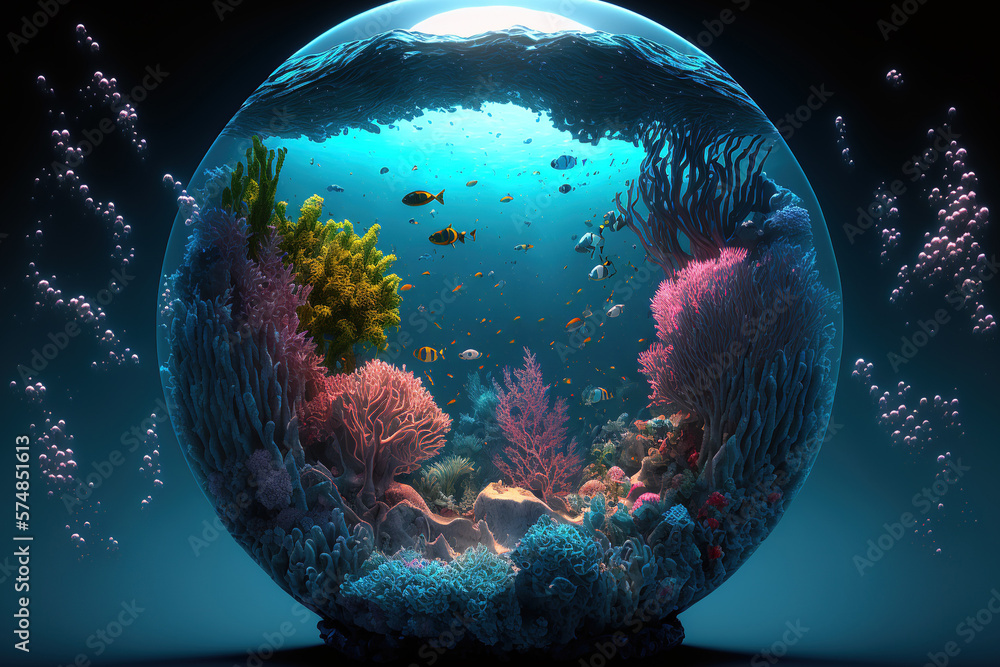
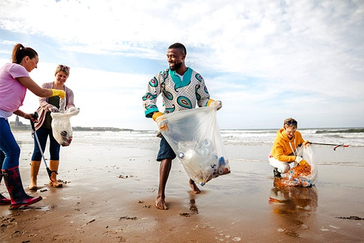

We are bound here to protect the ocean in many ways for various reasons. We would willingly embrace your support to protect this marine life. We are looking forward to reducing marine pollution, helping to enforce regulations to prevent overfishing and illegal marine practices. We are also willing to collaborate with international or local companies and organizations to combat global issues such as plastic pollution and would like to educate the public about marine activities. These actions will help to conserve and protect vulnerable species such as marine mammals, sea turtles, corals, and sea life
We must protect the ocean as it is a vital need for the planet to survive with all its life. The ocean is used to regulate the climate, produce oxygen, and also absorbs carbon dioxide. It also supports diverse ecosystems and is the main source of income, food, and livelihood for millions of people. Protecting the ocean preserves biodiversity, safeguards fragile habitats, and ensures sustainable resource management. Additionally, the ocean is a source of inspiration, recreation, and cultural significance for communities worldwide. Safeguarding it is crucial for present and future generations. Thus, we must protect the ocean at all costs
The ocean, considered boundless and endless, is now facing various hosts of threats that
affect its vulnerable ecosystems. Global warming, driven by human activities, is causing
sea levels to rise, posing a direct threat to coastal communities. Pollution, both visible
and invisible, wreaks havoc on marine habitats; plastic debris strangles marine life, while
toxins sweep into food chains, disrupting the ecological balance. Furthermore, air pollution
contributes almost one-third of the toxic contaminants and nutrients that enter coastal
areas and oceans. The United Nations Food and Agriculture Organization estimates that
31.4 percent of fish stocks are either fished to capacity or overfished, disrupting the
equilibrium of marine ecosystems and threatening coastal livelihoods.
These combined pressures underscore the urgent need for concerted global action to address
these challenges, safeguard marine biodiversity, and ensure the sustainable future of our oceans.